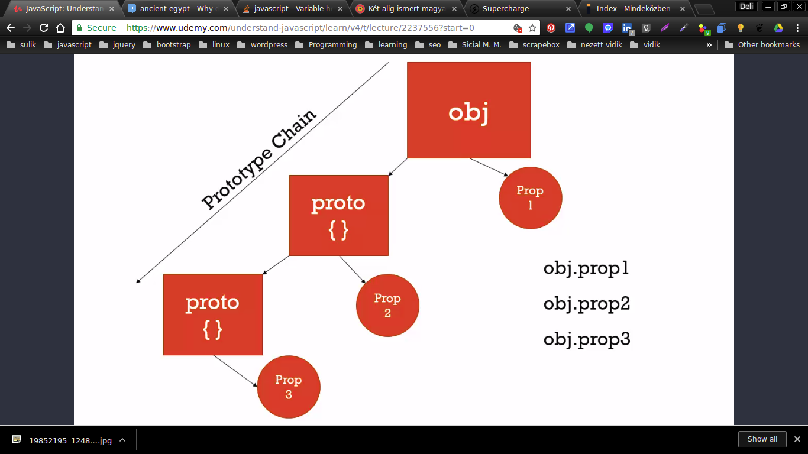

OOP AND PROTOTYPAL INHERITANCE
In javascript everything is an object or a prototype
On objectgets access to the properties and methods of an other one

when referencing props on the proptype chain it is not needed to tell on which protytpe.
obj.propertyOnWhicheverPrototype
Objects can share the same proptype objects and properties
Protype chain is a way kind of key-lookup
CONSTRUCT OBJECTS
Adding methods and properties and set the proto
A normal functions which used to construct objects
PROTOTYPE VS __PROTO__
- The PROTOTYPE is a property on a constructor function that sets what will become the __proto__ property on the constructed object.
- This value will be a reference pointer to the constructor functions prototype prop
- prototype” automatically creates a special property “constructor”, which is a reference to the constructor function itself.
- If a prototype has a non-null reference to its prototype, and so on, this is called the PROTOTYPE CHAIN
PROTOTYPEING
- Methods are referenced by value
- So 1000.s of objects can point on one memory space and will have the same method
- So by performance reasons it is better not to put the same method on all object because this take up more memory space
- It is better to put them on the "prototype" prop of the constructor
- So all the objects created are pointing to one memory space
BUILT IN FUNC CONSTRUCTORS
VARIABLES CONTAINING PRIMITIVE VALUES ARE OBJECTS AS WELL
- they are created by there constructors
- Via their __proto__ prop they have methods and so from their constructor
- their pirmitve value is boxed into their [[PrimitiveValue]] property
- Due to this feature you can extend the feature of any values in javascript
- var x1 = new Object();
- var x2 = new String();
- var x3 = new Number();
- var x4 = new Boolean();
- var x5 = new Array();
- var x6 = new RegExp();
- var x7 = new Function();
- var x8 = new Date();
Object.create
for CLONEing or CONSTRUCTing OBJECTS
METHOD CHAINING